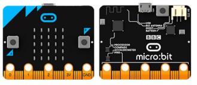
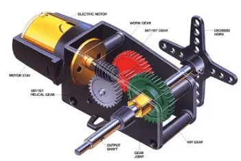
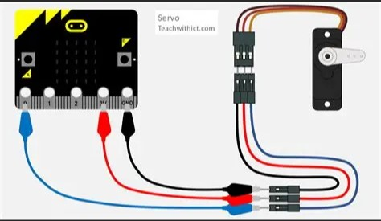

Placa y componentes
Micro:Bit es una placa de programación muy sencilla que tiene incorporados muchos sensores y actuadores y que permite conectar otros componentes.

En nuestro caso, hoy programaremos un componente llamado servomotor que nos permite realizar movimientos en la vida real programados por la placa de Micro:Bit.
Existen dos tipos de servos:
- Servos de rotación continua: permiten girar de forma completa e ininterrumpida como las aspas de un helicóptero.
- Servos de posición: nos permiten controlar el movimiento de una posición a otra, medida en ángulos. Por ejemplo, nos permite realizar la apertura de una puerta que reacciona a distintos sensores.

IMPORTANTE: Los servos no pueden ser forzados porque se estropean, si quieres conocer en qué posición está tu servo, puedes utilizar el siguiente programa.
Además, la conexión entre la placa y los servos es importante porque, aunque es sencilla, puede ocasionar diferentes problemas por los que nuestro robot puede no funcionar como nosotros queremos:
- Los tres cables del servo deben ir conectados a la Micro:Bit, a través de un adaptador o de cables cocodrilo.
- Los tres cables son de color negro rojo y amarillo.
- El cable negro debe ir al PIN GND (ground) de la Micro:Bit. Esta entrada es la toma de tierra, o negativo y nos permite cerrar el circuito.
- El cable rojo (situado en la posición intermedia) es el de potencia, y debe ir conectado al PIN 3V.
- Por último, el cable amarillo (en el extremo contrario al GND), debe conectarse a la placa en el PIN para el que hayamos hecho la programación (0, 1 o 2).

Es importante fijarse bien en que la programación en MakeCode y en los pines coincida para que todo funcione correctamente.